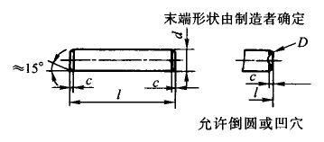

圆柱销 淬硬钢和马氏体不锈钢(摘自GB/T 119.2-2000)

标记示例：
公称直径d=8mm、公差为m6、公称长度l=30、材料为钢、不经淬火、不经表面处理的圆柱销的标记：
销GB/T 119.1 8m6×30
尺寸公差同上，材料为钢、普通淬火(A型)、表面氧化处理的圆柱销的标记：
销GB/T 119.2 8×30
尺寸公差同上，材料为C1组马氏体不锈钢表面氧化处理的圆柱销的标记：
销GB/T 119.2 6×30-C1
d |
1 |
1.5 |
2 |
2.5 |
3 |
4 |
5 |
6 |
8 |
10 |
12 |
16 |
20 |
c |
0.2 |
0.3 |
0.35 |
0.4 |
0.5 |
0.63 |
0.8 |
1.2 |
1.6 |
2 |
2.5 |
3 |
3.5 |
l |
3～10 |
4～16 |
5～20 |
6～24 |
8～30 |
10～40 |
12～50 |
14～60 |
18～80 |
22～100 |
26～100 |
40～100 |
50～100 |
1．钢A型、普通淬火，硬度550～650HV30，B型表面淬火，表面硬度600～700HV1，渗碳深度0.25～0.4mm，550HV1。马氏体不锈钢C1，淬火并回火，硬度460～560HV30 |
|||||||||||||
注：1．l系列(公称尺寸，单位mm)：2，3，4，5，6，8，10，12，14，16，18，20，22，24，26，28，30，32，35，40，45，50，55，60，65，70，75，80，85，90，100，公称长度大于100mm，按20mm递增。
2．本表的单位是mm。